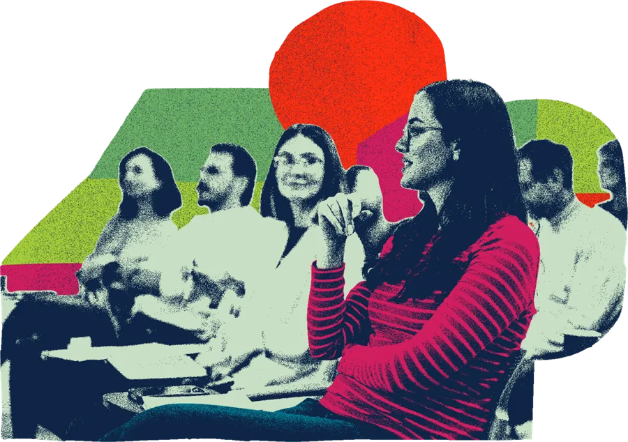
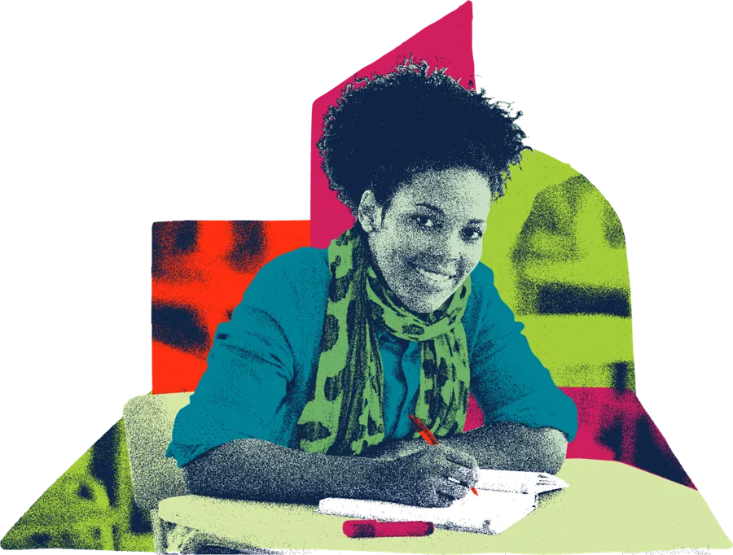

Your free year of learning
Video from Luke, about 90 seconds
Placeholder until the video is recorded
The Care Leaders is 10 this year. To say thank you, we’re giving a year of learning away, free, to everyone who works with children and families in and around care.
12 sessions with Luke, one on the second Monday of every month, 12:30 to 13:10 on Teams. 20 minutes of learning, 20 minutes of questions. Every session comes with a free tool you can use the next day.
Sign up once and we’ll send you every invite.

- 12free sessions with Luke
- 2nd Mondayof every month
- 12:30 to 13:10on Teams
- 1 free toolevery session, to use the next day

You’re in.
Check your inbox for your welcome email with all 12 dates. While you’re here, who else should be in the room?
Pass it on
This is for everyone, not just you. Send this page to your team, your colleagues and anyone who works with children and families.